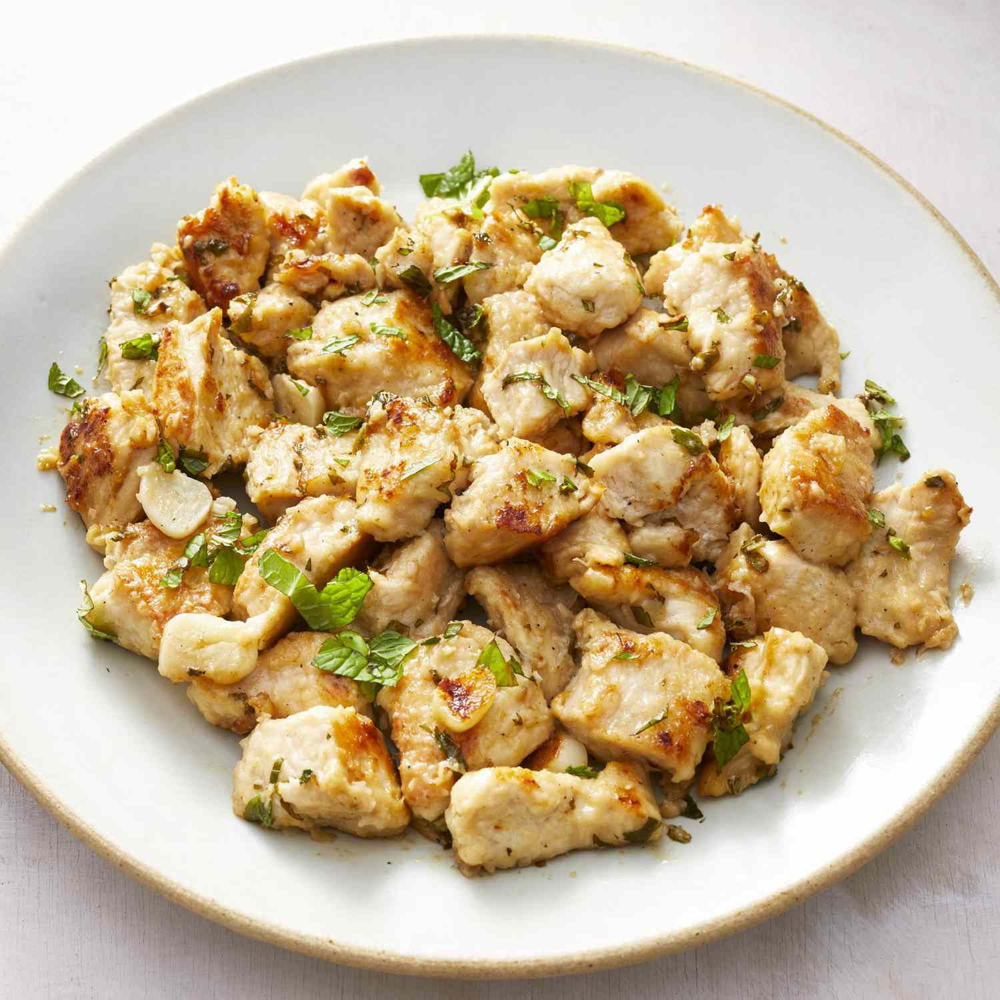

Mint Chicken

Description
Mint chicken is a dish that typically consists of marinated and grilled or roasted chicken pieces flavored with mint and other herbs, spices, and often served with a side salad or vegetables.
Ingrediants
- 2 skinless, boneless chicken breast halves - cut into bite-size pieces
- 1 clove garlic, crushed
- ½ cup all-purpose flour
- ½ cup margarine
- ¼ cup fresh lemon juice
- ½ cup chopped fresh mint leaves
Steps
- In a medium bowl, mix together the chicken pieces and garlic. Toss with the flour just to coat, and shake off excess.
- Heat the margarine in a large skillet over medium-high heat. Add the chicken pieces; cook and stir until browned.
- Add the mint leaves and lemon juice, cover and steam for about 5 minutes, just until the chicken is cooked through. Do not over cook the chicken or it will be tough.